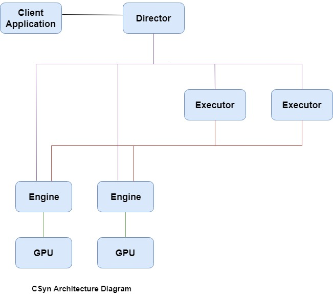

CSyn Overview¶
Introduction¶
Calculation Synergy (CSyn) is a distributed general purpose computing system for Graphics Processing Units (GPU). CSyn is a highly scalable software solution that allows application services to operate in an unattached to specific GPUs. Multiple client applications can submit multiple requests in parallel and CSyn will handle these requests in parallel on different GPUs. A scalable architecture will provide linear gains in performance with the addition of more hardware resources. Current CSyn version supports CUDA as a parallel processing platform.
Programming Model¶
The ability to easy integrate a new technology into a variety of different environments is a core requirement of any new technology. CSyn offers support for multiple programming languages with the addition of a easy integration strategy. The client applications can execute any function from modules hosted on the CSyn using different languages, including C++, Python, Java and C#. CSyn also provides a standards-based, flexible and intuitive programming model (SDK) to simplify development process. This SDK provides the ability to create instance of job with multiple tasks and submit it to CSyn runtime environment for execution. This job is virtualized and invoked on one or more CSyn GPUs and job results are returned to the client application.
Architecture¶
CSyn uses Service-Oriented Architecture as an architectural approach. It includes three different components in its architecture:

Client - The client application that create and submit service requests to the CSyn Director
Director - The service that manages CSyn resources (modules, executors, engines), execute different client requests, load balance client jobs
Executor - The service that execute client jobs, load balance job tasks to different engines
Engine - The service that run job tasks on the CSyn GPUs
{kind=link}
Operating Console¶
In addition to providing a programming model and runtime environment, CSyn also includes a web-based operating console. Console allows you to check the systems status, review available GPU properties, CSyn hosted modules and module functions, access jobs execution status, download different client SDKs and provide CSyn user guide.